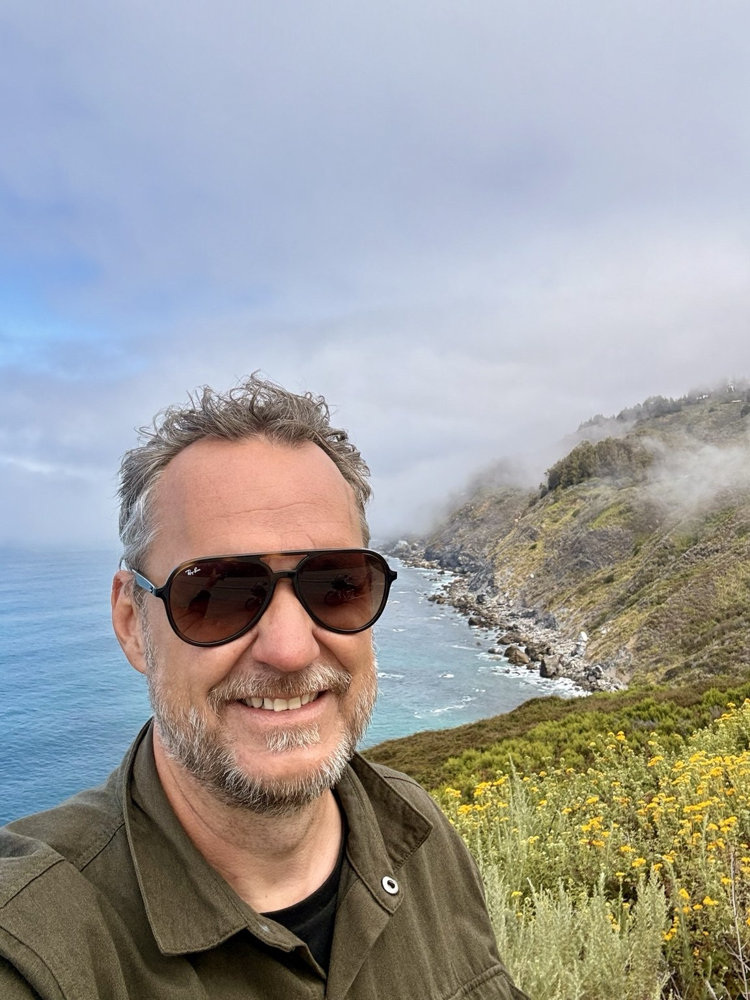

VEGARD HAMMER / OSLO, NORWAYA PERSONAL EXPERIMENT
Technology. Jazz. Salt water. Open roads.
VEGARDHAMMER
01 / DIFFERENT FREQUENCIESALL CONNECTED, SOMEHOW.
A few things
I orbit.
Four ways to get completely absorbed.
Tap a chapter. Take a detour.
02 / FOUND ALONG THE WAY10 FRAGMENTS
Life. Unsorted.
03 / THE PERSON BETWEEN THE CHAPTERSVH.

HELLO THERE.Hello.
I’m Vegard.
Technologist by profession.
Jazz pianist by instinct.
Explorer whenever possible.
I’m based in Oslo, where I work as CTO at Huddly, building AI cameras for meeting rooms. Away from work, you’ll often find me at a piano, aboard Billie’s Holiday, or out on my Road King.